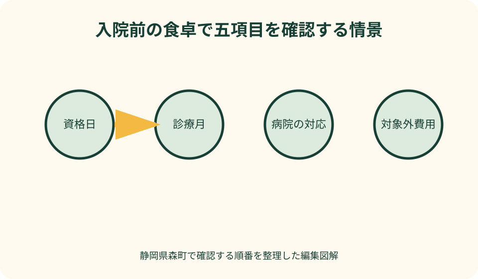
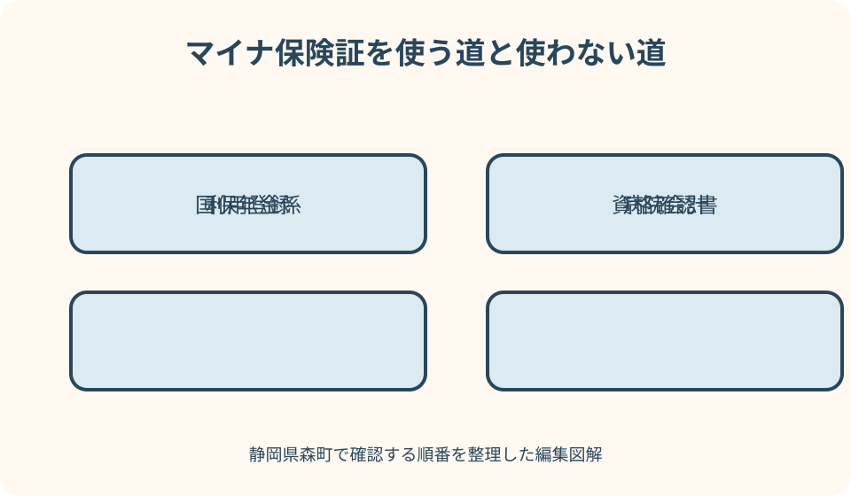

健康・医療・保険｜最終確認 2026-08-10
静岡県森町の国民健康保険｜入院前に確認する窓口負担の限度額
入院前の限度額確認は、上限金額を検索することより、診療月の保険資格と医療機関で使える確認方法をそろえることが先です。マイナ保険証を使う場合、使わない場合、読み取りができない場合を分け、退院時の支払いに間に合うよう準備します。
結論：入院日より前に、医療機関と森町へ一度ずつ確認する
入院や高額な外来治療が決まったら、最初に医療機関の受付または入退院支援窓口へ、マイナ保険証によるオンライン資格確認に対応しているかを尋ねます。対応していれば、受付で限度額情報を提供する手順を確認します。カードを持参するだけで完了すると決めつけず、利用登録と受付操作を確かめます。
次に、診療時点で森町国民健康保険の資格があるかを確認します。退職後すぐ、就職直後、扶養入り、転入・転出の途中は、手元の書類と資格情報の反映時期が一致しないことがあります。森町の住民生活課国保年金係へ、資格日と入院予定日を伝えます。
森町公式は、マイナ保険証を使えば、原則として事前手続なしで高額療養費の限度額を超える支払いが免除されると案内しています。これは保険診療分に対する仕組みです。食事代、差額ベッド代、日用品などまで退院会計がすべて上限内になるという意味ではありません。
この記事の確認日は2026年8月10日です。高額療養費は2026年8月診療分から国の制度変更があるため、古い限度額表で支払額を決めないでください。診療月、年齢、所得区分を国保年金係へ示し、今回使われる区分を確認します。
限度額の仕組みは、病院代の値引きではない
窓口負担を限度額までにする取扱いは、高額療養費を医療機関の窓口で反映する仕組みです。診療そのものの価格を値引きするのではありません。保険診療の自己負担について、年齢や所得区分に応じた月ごとの上限を適用します。
計算の期間は月の初日から末日までです。月末に入院して翌月に退院する場合、同じ病室、同じ治療でも二つの診療月になります。入院期間全体の合計が一つの上限になるとは限らないため、病院の概算説明では月別内訳を尋ねます。
厚生労働省の案内では、マイナ保険証による限度額の取扱いは、同一月・同一医療機関の支払いに関する注意があります。複数の病院や薬局を利用した世帯合算などは、後日の高額療養費申請で調整される場合があります。窓口会計だけで世帯全体の最終額が確定するとは考えません。
限度額の適用を受けても、支払う額がゼロになるわけではありません。所得区分に応じた自己負担、対象外費用、月をまたいだ分は残ります。入院保証金や退院時精算の扱いも医療機関ごとに確認し、制度上の上限と病院の会計手順を分けます。
準備の一枚目に書くのは、金額ではなく資格日
準備表には、患者氏名、生年月日、入院予定日、退院見込み日、保険者名、資格取得日を記します。限度額は診療時の加入先が扱うため、現在森町に住んでいることだけでは森町国保への申請理由になりません。
勤務先の保険をやめた日と森町国保へ加入した日、別の保険へ移る予定日が近い場合は、その日付を一本の線にします。資格が重複しているように見える、空白がある、書類がまだ届かないというときは、自己判断で医療機関へ古い情報を出さず、双方の保険者へ確認します。
マイナポータルで資格情報を見られる人は、保険者名と資格取得日を確認します。紙の資格情報のお知らせや資格確認書を持つ人は、有効期限と氏名を見ます。画面のスクリーンショットを家族の公開チャットへ送らず、必要な情報だけを安全に共有します。
入院予約時に示した保険から変更があった場合は、退院時まで待たず医療機関へ連絡します。資格変更を伝えないと、いったん多く支払ったり、後日請求が訂正されたりすることがあります。どの窓口へ何日までに伝えるかを病院へ尋ねます。
マイナ保険証を使う場合の確認手順
マイナンバーカードを健康保険証として使うには、保険証利用登録が必要です。カードがあることと登録済みであることは別なので、入院当日に初めて確かめないようにします。登録状況はマイナポータルなど国が案内する方法で確認します。
医療機関では、顔認証付きカードリーダーなどで資格確認を行い、限度額情報の提供に関する画面を確認します。操作が難しいときは職員へ声をかけます。暗証番号を家族や職員へ口頭で伝えるのではなく、顔認証や案内された支援方法を使います。
厚生労働省は、マイナ保険証を利用すれば、限度額適用認定証を発行申請しなくても、保険診療について限度額を超える支払いが免除されると説明しています。森町公式にも同じ趣旨の案内があります。
一方、保険者側のデータ登録が未完了、機器の不具合、カードや電子証明書の状態などにより、その場で確認できないことがあります。エラー表示を自分で解釈せず、医療機関に代替確認方法を尋ね、必要なら森町国保年金係へ連絡します。
マイナ保険証を使わない場合は、資格確認書と限度額を分けて尋ねる
マイナ保険証を使わない人には、従来の保険証に代わる資格確認書が交付されます。森町の案内でも、利用登録状況によって資格情報のお知らせまたは資格確認書が交付されることが示されています。資格確認書は保険資格を示す書類で、限度額の確認方法まで必ず同じとは限りません。
国の案内では、マイナ保険証を持たない人への資格確認書は、当分の間、原則として本人の申請によらず無償交付されます。ただし、限度額区分の表示や認定に別の手続きが必要かは、年齢、所得区分、交付済み書類によって異なるため森町へ確認します。
電話では「資格確認書があるので限度額も適用されますか」と具体的に尋ねます。必要な場合は、申請方法、必要書類、交付までの日数、有効期間、医療機関への提示時期を聞きます。申請した日に必ず使えると見込んで退院会計を組まないようにします。
本人が病気や障害などで来庁できない場合は、代理手続の可否、委任状、本人確認書類を事前に確かめます。個人番号が必要か、写しを郵送できるかは、森町が案内する手順に従います。家族の判断でカード原本を預かったり郵送したりしません。

退院会計に含まれる対象外費用も見積もる
限度額の対象は公的医療保険が適用される診療の自己負担です。森町公式と厚生労働省の案内は、入院時の食事代や差額ベッド代などが対象外であることを示しています。個室を希望した場合の料金、病衣、テレビ、日用品などは別に見積もります。
先進医療や自由診療、診断書、証明書なども、保険診療分と同じ扱いになるとは限りません。治療説明を受けるときに、医学的な必要性と費用区分を分けて質問します。費用だけを理由に治療を自己判断で中止せず、医師や相談窓口へ伝えます。
食事代の減額に関係する区分がある場合でも、自動で反映されるかは確認が必要です。長期入院や住民税非課税世帯など、自分に関係しそうな条件があれば、申告した所得状況と必要な認定を国保年金係へ尋ねます。
病院から概算額を聞いたら、保険診療の自己負担、食事、室料、日用品、未確定分の五つに分けてメモします。限度額適用後の見込みなのか、適用前なのかも書きます。家族間で「総額」とだけ共有すると、退院日に不足しやすくなります。
月またぎ・転院・院外薬局は追加精算を前提にする
月をまたぐ入院では、各月に上限が適用されます。入院日を費用だけで変更できるとは限らず、治療上の必要性を優先します。会計の見通しを知りたい場合は、予定された入退院日で何月分に分かれるかを病院へ尋ねます。
別の医療機関へ転院すると、窓口では各医療機関ごとに限度額の扱いが進むことがあります。同一月に複数の負担がある場合、後日、世帯合算などにより払い戻し対象となる可能性があるため、両方の領収書と診療明細を保管します。
院外薬局を利用する場合、処方元の医療機関と薬局の支払いの関係を確認します。窓口での適用だけで合算結果まで反映されないこともあるため、薬局名、処方日、調剤日、支払額がつながるよう領収書を整理します。
同じ病院でも、入院と外来、医科と歯科などの計算区分があります。退院後の外来や歯科治療を含めた最終判定は、森町からの高額療養費案内で確認します。限度額を使ったから領収書は不要と考えず、月別に残します。
2026年8月以降は、古い認定証の金額を当てはめない
厚生労働省は、2026年8月から高額療養費の月額上限を見直し、年間上限を新設したと案内しています。さらに2027年8月から所得区分を細分化する予定です。以前の入院時に使った金額や家族の古い認定証を、今回の支払見込みへ転記しないでください。
限度額の区分は、年齢と所得だけでなく、どの診療月に適用するかが重要です。2026年7月31日以前と8月1日以降を同じ表で計算せず、森町へ対象年月を明示します。制度変更をまたぐ長期入院では、病院の会計窓口にも月別の扱いを尋ねます。
多数回該当や年間上限など、長期治療に関係する軽減の仕組みもあります。しかし、目の前の一回の入院会計にすべて即時反映されるとは限りません。何が窓口で反映され、何が後日支給なのかを分けて説明してもらいます。
検索結果や古いパンフレットの数字は、対象年月が表示されているかを確認します。最新の厚生労働省ページと森町の国保ページを開き、内容に差があるように見える場合は、その画面の更新日を添えて国保年金係へ照会します。
森町での入院準備は、移動と相談の担当を分ける
森町の北部や山間部から町外の医療機関へ通う場合、入院準備には病院と役場の両方への移動が生じることがあります。本人が来庁しなくても確認できる内容を先に電話で聞き、治療前の体力を手続きだけで消耗しないようにします。
家族の役割は、患者に付き添う人、保険資格を確認する人、病院の会計説明を聞く人に分けます。一人がすべてを抱えると、同じ説明を聞き直したり、診療月を取り違えたりします。共有メモには確認日と次の担当だけを簡潔に残します。
公立森町病院以外へ入院する場合も、森町国保の被保険者なら保険者への相談先は森町です。一方、入院費の概算、個室料金、退院会計は受診先が説明します。町と医療機関の役割を混ぜず、質問を二枚に分けます。
入院が緊急で事前確認できなかった場合は、治療を遅らせる理由にしません。受診後、家族または医療機関の相談員を通じて資格確認と限度額の扱いを相談します。いったん支払った場合でも、高額療養費の申請対象となる可能性があるため領収書を保管します。
良い点：立替負担を抑え、治療前に家計を分けて考えられる
限度額を窓口で反映できる良い点は、高額療養費の払い戻しまで大きな金額を立て替える負担を抑えられることです。入院前に確認すれば、保険診療分と対象外費用を分け、必要な手元資金を現実的に見積もれます。
マイナ保険証に対応した医療機関では、認定証の発行を待たずに限度額情報を確認できる利点があります。急な入院でも利用できる可能性がありますが、資格情報が正しく登録され、医療機関で確認できることが条件です。
カードを使わない人にも資格確認書による受診方法があります。利用方法を一つに限定せず、本人の事情に合う手順を森町へ尋ねられます。デジタル操作が苦手な家族を責めず、早めに代替確認を始めることが大切です。
入院前の記録を残すと、退院後の高額療養費申請にもつながります。診療月、医療機関、適用された区分、窓口支払額が分かれば、森町から届く申請案内と照合しやすくなります。
注文したい点：マイナ保険証を使えない場合の入口をもっと見つけやすく
森町公式では、マイナ保険証による事前申請不要の案内が目立ちます。一方、カードを使わない人、読み取りに失敗した人、資格変更直後の人は、自分に必要な代替手順を同じ場所から見つけにくいことがあります。
限度額適用認定証、資格確認書、資格情報のお知らせは名称が似ていますが、役割が異なります。誰にどの書類が交付され、窓口へ何を見せ、別申請が必要となるのはどの場面かを、分岐図で示す案内があると理解しやすくなります。
また、2026年8月の制度変更後に適用される上限と、町ページに載る従来表の関係を診療月別に示す更新が望まれます。利用者は金額だけを拾いやすいため、「対象診療月」と「最新確認日」を表の近くへ明示してほしいところです。
窓口負担の上限と、食事・室料など対象外費用の違いも、入院前の不安が大きい部分です。制度説明と病院会計の役割は別ですが、町ページから医療機関へ何を尋ねるかまで分かると、相談の行き違いを減らせます。
代案・結論：確認できないときは、支払後の申請経路を残す
マイナ保険証を利用できなければ、まず資格確認書を使った受診と、限度額認定に必要な手続きを森町へ確認します。入院までの日数が短い場合は、交付が間に合うか、医療機関へ後日提示できるかを双方へ尋ねます。
事前の限度額適用が間に合わず、窓口で通常の自己負担を支払った場合でも、対象となれば後日、高額療養費として超過分が支給されます。森町では該当者へ申請書を郵送すると案内しているため、領収書、診療明細、資格情報を失くさず保管します。
退院費用を用意できないおそれがあるときは、支払日の直前まで黙って待ちません。医療機関の相談窓口と森町国保年金係へ早めに事情を伝えます。利用できる制度や支払相談は個別条件で異なるため、インターネット上の体験談だけで決めません。
結論として、最善の準備は一つの証明書を探すことではなく、資格日、診療月、病院の対応、限度額情報の確認方法、対象外費用を五つに分けることです。どこか一つが未確定でも、その未確定を相談先へ渡せる状態にします。

家族に残す入院前メモは、個人情報と住宅情報を混ぜない
医療のメモには、保険者名、資格日、入院先、入退院予定日、限度額確認の方法、病院会計の連絡先を記します。個人番号、診療内容、所得区分など慎重に扱う情報は、閲覧できる家族を限定します。
領収書や申請書は月別の医療ファイルへ置きます。実家の権利証、固定資産税通知、通帳などと同じ箱に入れると、必要な場面で家族が不用意に医療情報を見るおそれがあります。用途ごとに保管場所を分けます。
家を留守にする入院なら、郵便を受け取る人、換気、草木、雨漏り、ペット、車の管理を別の生活メモへ書きます。森町から届く申請案内を見落とさないよう、郵便確認の担当と本人へ戻す日を決めます。
退院後は、病院の概算と実際の支払額、限度額適用の有無、町からの申請案内を照合します。記録が違っていたら、誰かを責める材料にせず、次回入院時に確認する項目へ直します。
大石の視点：入院費と家の維持費を分ければ、売却を急がずに済む
大石の視点では、入院費の概算が大きく見えたときこそ、家や土地を急いで手放す判断を避けたいと考えます。限度額適用前の数字、適用後の保険診療分、対象外費用、今後の通院費を別々に確定させます。
森町の実家を長く空けるなら、医療費とは別に固定資産税、火災保険、電気・水道、草刈り、修繕などの維持費を並べます。一時的な治療費と毎年続く住宅費を同じ「大きな出費」としてまとめないことが重要です。
本人が治療中のとき、家族は道路、境界、農地、登記名義まで短期間で結論を出そうとしがちです。緊急の管理だけを先に決め、売る、貸す、住み続ける判断は、医療と生活の見通しが整ってから比較します。
売却未定でも、実家カルテに名義、連絡先、維持費、鍵、管理担当を記録できます。医療情報は別ファイルで保護し、家の情報だけを共有すれば、本人のプライバシーを守りながら留守宅管理を引き継げます。
まとめ：入院前日のチェックで終わらせない
入院が決まった時点で、診療時の保険者と資格日を確認します。次に医療機関へ、マイナ保険証で限度額情報を確認できるか、できない場合は何を提示するかを尋ねます。
カードを使わない人は、資格確認書の有効期限を見て、限度額認定の追加手続が必要かを森町国保年金係へ確認します。本人が動けない場合の代理手続と必要書類も、来庁前に聞きます。
病院の概算は、保険診療、食事、室料、日用品、その他へ分けます。月をまたぐ、転院する、院外薬局を使う場合は、窓口の限度額だけで最終精算が完了しない可能性を見込み、すべての領収書を残します。
2026年8月以降は上限の仕組みが変わっています。この記事や古い表から金額を確定せず、診療月と年齢、所得区分を添えて森町へ照会してください。準備の目的は金額を言い当てることではなく、治療を受ける本人が支払いの不安を早めに相談できる状態を作ることです。
公式情報・確認先
掲載内容は次の一次情報を基礎に整理しました。営業、料金、催し、交通は変わるため、出発前または手続き前にリンク先で最新情報を確認してください。
- 国民健康保険（静岡県森町、2026-08-10確認）
- マイナンバーカードの健康保険証利用について（静岡県森町、2026-08-10確認）
- マイナンバーカードの健康保険証利用のメリット（厚生労働省、2026-08-10確認）
- 資格確認書について（マイナ保険証を使わない場合の受診方法）（厚生労働省、2026-08-10確認）
- 高額療養費制度を利用される皆さまへ（厚生労働省、2026-08-10確認）